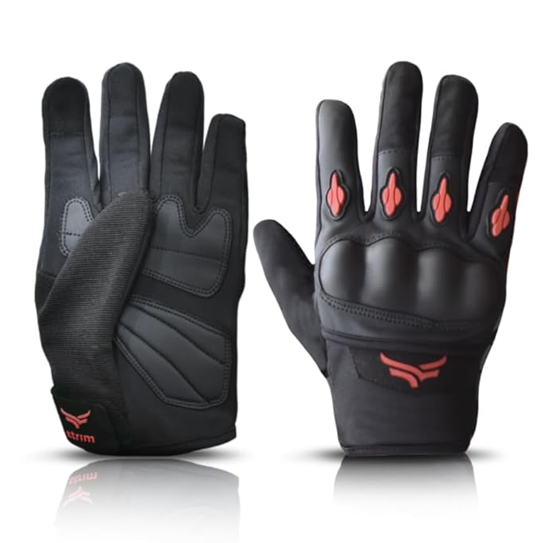
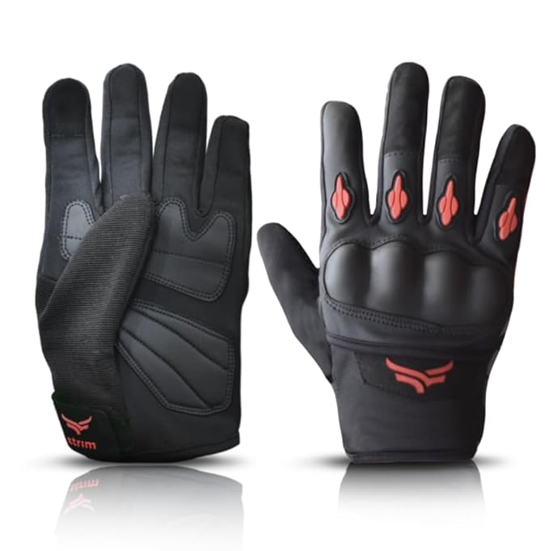
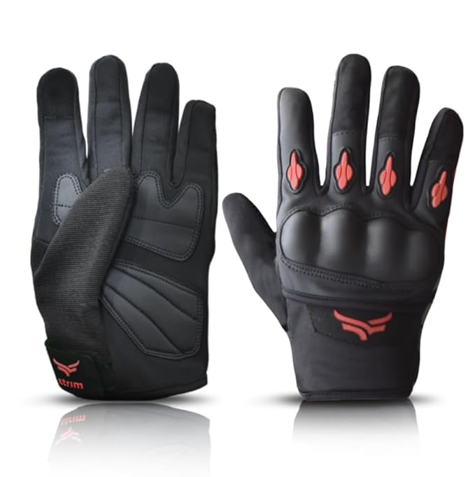

Accessories
 



Spiti Valley is a must-see adventure destination for those who love Mountains and Motorcycles. The diversity of this place is so amazing that it offers one of the most adventurous destinations in the lap of the Himalayas. Spiti valley bike trip offers breath-taking mountains, passes, valleys, lakes, history, rich culture, and one of the best foods from the local region. We at Motorcycle Escapades bring you one of the unique adventures of Himachal Pradesh covering one of the remote and isolated valleys of Spiti and Kinnaur Valley.
If you are planning a Road Trip to Spiti valley, below are some of the Top Places to Visit in Spiti valley during your Road Trip. Manali, Atul Tunnel, Chandratal, Kunzum Pass, Losar, Kaza, Key Monastery, Kibber, Langza, Komic, Hikkim, Tabo, Dhankar Monastery, Mud village, Gue Mummy gompa, Nako Lake, Roghi Suicide point, Reckong Peo, Sangla, Chitkul, Hindustan Tibet highway, Sarahan, Narkanda, Hatu peak & Shimla.
There are 2 routes to reach Spiti valley from Delhi/Chandigarh.
1. Route no 1: Delhi/Chandigarh – Manali – Chandratal-Kunzum La pass- Losar-Kaza-Tabo-Nako-Kalpa-Narkanda-Shimla-Delhi/Chandigarh
2. Route no 2: Delhi/Chandigarh – Shimla-Narkanda-Kalpa-Nako-Tabo-Kaza-Chandratal-Manali.
